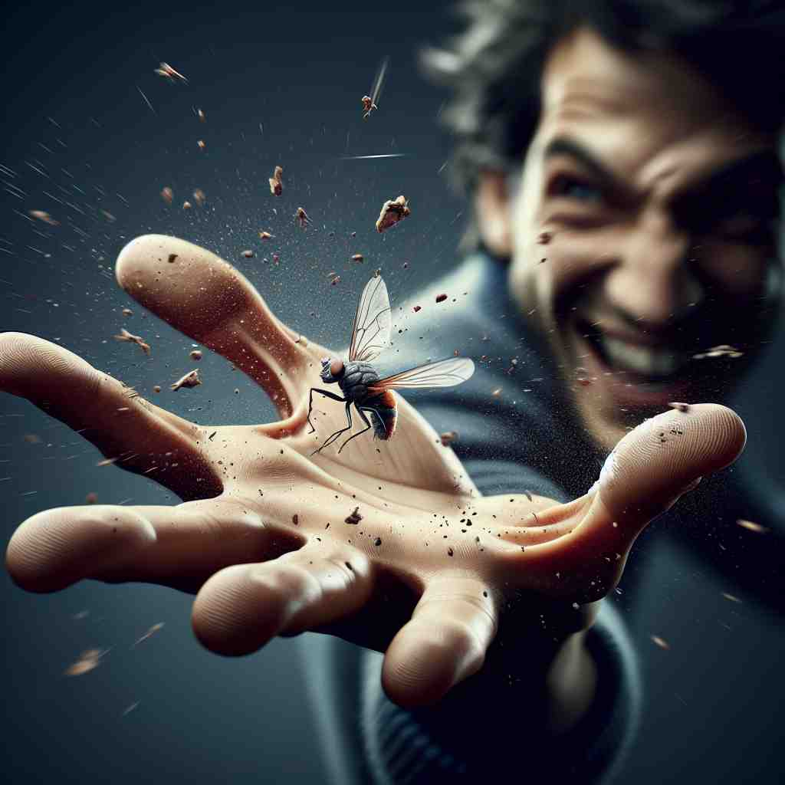

💬 The hunter aims to kill a deer in the forest.

💬 He tries to kill a fly that is buzzing around him.
💬 The gardener needs to kill a weed to let the flowers grow.

💬 The hawk will kill a fish for its meal.
🔈 [kɪl]
🗝️ v. to cause the death of a person or animal
🖼️ 在一片茂密的森林中，一只狩猎者静静地潜伏，弓箭已经上弦，盯着远处的猎物。他屏住呼吸，毫无声息地射出箭去，精确无误，猎物应声倒地，展示了'kill'字面上致死的含义。
🔍 想象'kill'是一个强烈的终止行为。从字面的'致死'延伸到比喻的'结束'、'消灭'、'停止'等。无论是生命、感受、时间还是设备运行，都可以被'kill'。这个核心概念贯穿了'kill'的各种用法，帮助你更容易记住和理解它的多重含义。
💬 The hunter aims to kill a deer in the forest.
💬 He tries to kill a fly that is buzzing around him.
💬 The gardener needs to kill a weed to let the flowers grow.
💬 The hawk will kill a fish for its meal.
🌳 该词源自古英语 'cyllan' 或 'cwellan'，意味着 '结束生命'。该词本身是个完整的单词，没有明显的词根、前缀或后缀。
💡 记住 'kill' 可以联想到 'killing time'（打发时间），从而形成一个形象的记忆场景，以帮助记住这个词的含义。
🗝️ v. to stop or end something
🖼️ 在一个热闹的会议室中，团队成员们正热烈地讨论一个项目。忽然，经理举起手，打断大家说道：'我们需要kill这个项目，它不再符合公司的策略。'于是，所有关于该项目的讨论戛然而止，体现了'kill'作为终止某事的含义。
💬 The noise killed our conversation.
❓ 比喻性地"结束"某事物的存在
🗝️ v. to defeat or destroy completely
🖼️ 在一场精彩的围棋对弈中，选手A正在全力攻击选手B的棋子。经过一系列精妙的布局，选手A最终抹去选手B的所有气路，B无奈认负，此时'A赠予B一记致命一击，'展现了'kill'作为彻底击败或摧毁的含义。
💬 Our team killed the competition.
❓ 将对手或目标彻底"消灭"
🗝️ v. to cause great pain or discomfort
🖼️ 在一个温暖的居室中，一位年轻人因感冒而疲惫地躺在沙发上，艰难地说：'头痛杀了我。'他用手捂住额头，皱着眉头，形象地展现了'kill'产生极大痛苦的不适感。
💬 These new shoes are killing my feet.
❓ 夸张地表达极度的痛苦，仿佛要"致命"
🗝️ v. to spend time, especially when waiting
🖼️ 在一个阳光明媚的机场候机室里，一名旅客拿出一本书，安静地读起来。他微微一笑，自言自语道：'我需要kill一些时间，直到登机。'这展示了通过从事某事来消磨时间。
💬 We killed an hour playing cards.
❓ 比喻性地"消磨"或"杀死"时间
🗝️ v. to switch off or stop from working
🖼️ 在一个复杂的机械厂房里，工厂管理员看着已到下班时间，转身走向控制面板。他熟练地按下一个按钮，机器开始关闭，显示屏渐渐变暗，厂房内的一切纷纷停下，是时候'kill所有机器了'。
💬 Don't forget to kill the lights before you leave.
❓ 使设备或系统停止运行，就像"杀死"它